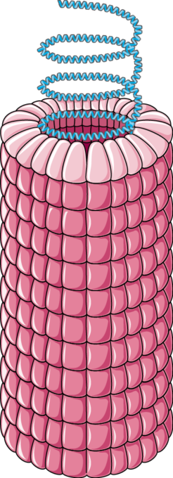

Dr. Rosalind Franklin

Left: Photo 51, an X-ray diffraction image of the DNA; Right: Photo of Dr. Rosalind Franklin
Key facts of her life
- Born in 25th July 1920
- Contributed to the discovery of the DNA structure
- Contributed new insights on the structure of viruses
- One of the foundations of structural virology
- Died of ovarian cancer in 1958
Rosalind Franklin had X-ray diffraction images of DNA, the photo 51 is the most famous, and the one that was shown to Watson. Watson and Crick created the double helix model of DNA based on this photo and published in 1953. They got the Nobel Prize in 1962 with Mauricie Wilkins, but Rosalind was left behind.

She also studied the Tobacco Mosaic Virus and found out that the proteins form a hollow spiral tube with the RNA in the middle. She also showed that RNA was single stranded, differntly from DNA.
More information on her Wikipedia page